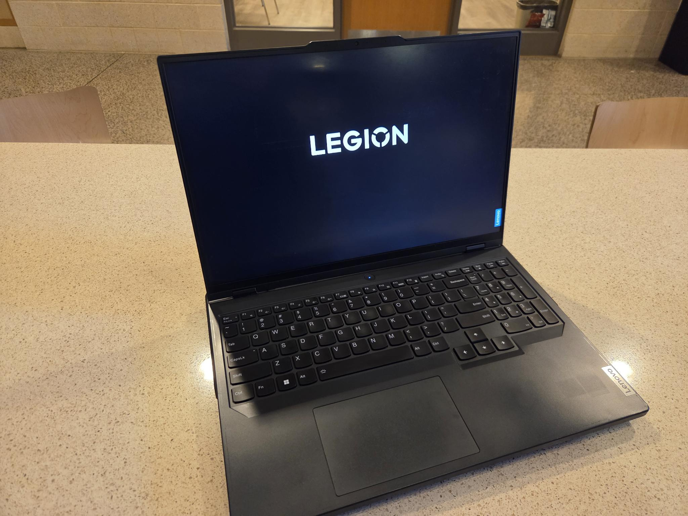
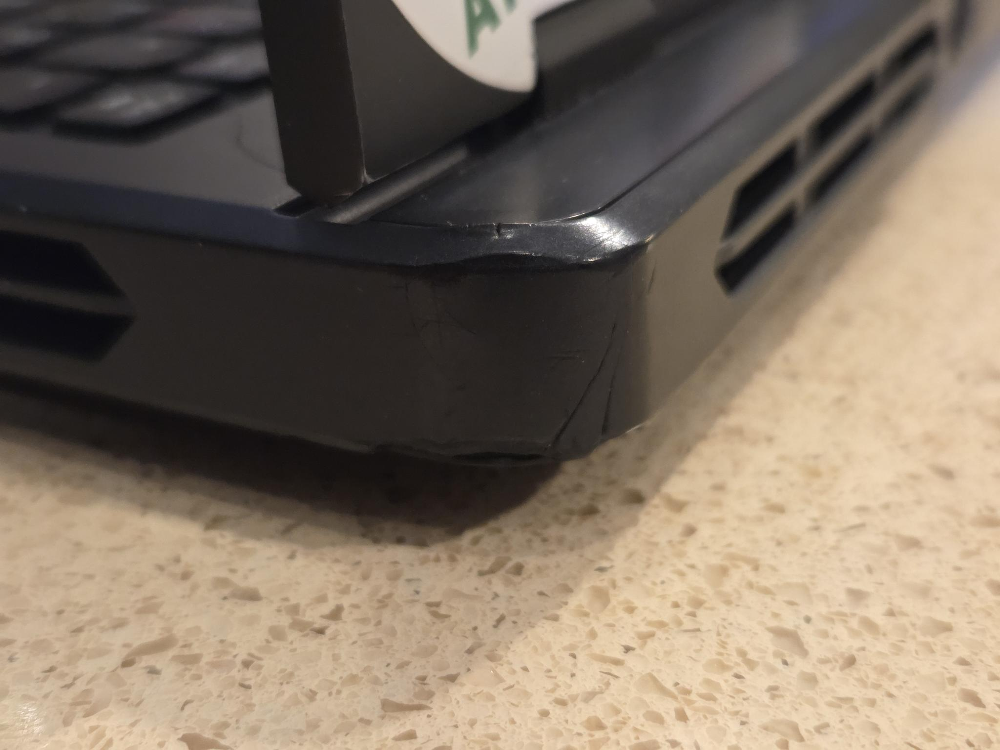
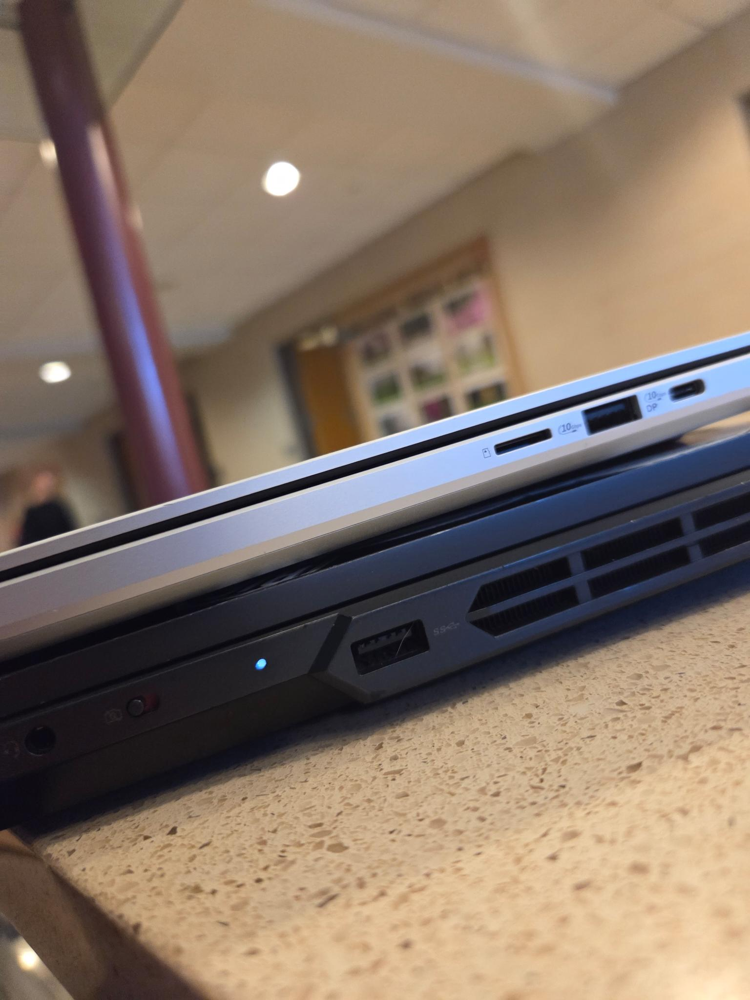

In August 2023, I recieved a Lenovo Legion Pro 5 16ARX8 from my parents for high school use. It was the laptop recommended by the school–their techonlogy department uses it in their laptop carts for engineering. I am still using the laptop, but would not recommend the one I purchased and wish I got a different one.
The reason why? The battery life.
It's a 16" gaming laptop, and looks like one. Its chunky form barely fits into my backpack. The plastic body is fine, but has chipped in the corners and has been worn down with hand oil after 2+ years.


I've rather enjoyed using the keyboard. It is no mechanical keyboard, but feels pleasing and I can type relatively quickly. The keys don't feel cramped, and the layout makes sense. The arrows feel like they would be where my palms are but there have been no accidental presses in that area. Overall, a pleasing experience. The one complaint I might have is that there is only one Fn key, so it can be hard to configure my hands for shortcuts for changing brightness, refresh rate, etc.
The trackpad is okay. I've tried MacBook ones–which lead the industry–and this one is a VERY clear step down. It's not as big as it could be, and clicks don't feel consistent. Towards the bottom of the trackpad, presses have a lot of travel. Near the top, they can't travel enough to register (in fact, the trackpad and keyboard flex under the pressure before it registers a click). Every time my MacBook friends use my laptop I get complaints, which I understand. I've tried Windows laptop trackpads that are good, but this is not that. The one good thing I could say is that I've gotten used to it.
No real comments here. It's a 1600p 165Hz screen at 16". Text clarity is great, and brightness has mostly been servicable on this laptop. It can get kind of dirty and has a matte coating, while I would prefer a glossy coating. This is also an older model so it doesn't come with OLED. I heard the newer ones come with it, but this one comes with an IPS screen.
The webcam is good, but the built-in privacy switch on the side of the computer can be bumped easily which is not ideal. I haven't used the microphone but I'm sure it's fine.
The speakers are not great. They get loud enough for watching YouTube videos alone, but when you are in an enviroment with anyone else talking it is hard to hear what the laptop is outputting. The quality is fine, but it is no stand-out.
Overall, the laptop has been able to keep up with what most of schoolwork is–web browsing. It has had no problems keeping up with Word, Discord, Spotify, coding, Chrome, etc. Other than that, I play 2D games, Photoshop, Fusion 360, and Davinci Resolve. Besides turning the fans on, these programs have run great. I didn't get the highest spec machine–I got a RTX 4050 mobile and 16GB of RAM–but it has been appropriate for my tasks. The fans spin up and can get loud–but only if you set it to high-performance. Usually it's fine, and the fans don't produce an unpleasent noise.
The performance profile of a gaming laptop comes at a tradeoff. Battery life. While in high performance mode for things such as video editing or modeling in Fusion 360, my battery lasts under 2 HOURS from full charge.
While doing more normal things, like web browsing, I can expect maybe four hours. I carry around a charger in my school backpack just in case. I guess that's one of the benefits of this laptop–the included 300W charger is great when at home and you can use a 65W on the go. The fans rarely spin up on the Quiet power profile (you can guess why) which also limits power consumption.
I should have gotten a Lenovo Yoga. Maybe a 16", but a 14" would probably have been fine. They are supposed to have great battery life (over 10 hours! even outside of manufactorers claims!), especially the Snapdragon model. They are also a lot thinner. Here's a comparison between my laptop and a friend's Zephorus G14.

A Lenovo Yoga also has fine performance, and is slightly cheaper than this–which I ended up paying about $1100 for. This laptop was meant for–and still is meant for–me to use throughout high school. I will think more clearly and be more informed when buying my next laptop though, and hopefully you are too. Gaming laptops have tradeoffs which are not worth it for many tasks.